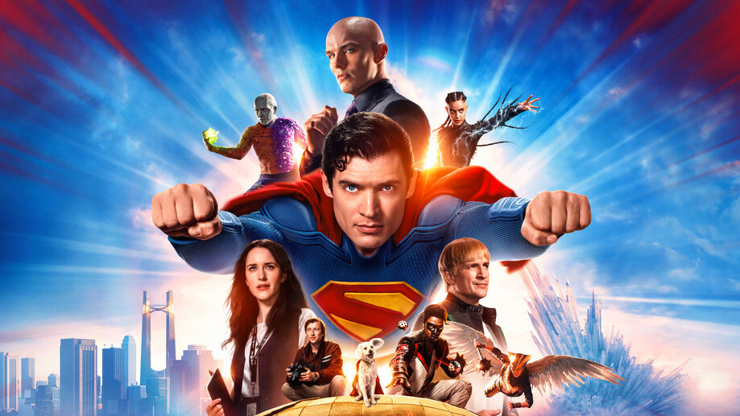

WORLD-BUZZ
HEADLINES
- TITANIC DISASTER
- Two major historical events compete for recognition on April 14. At 10:00 p.m. on April 14, 1865, actor John Wilkes Booth entered the presidential box at Ford's Theatre in Washington, D.C., and fatally shot President Abraham Lincoln. At approximately 11:40 PM, April 14, 1912, the R.M.S.
Titanic on its maiden voyage struck an iceberg off the coast of Newfoundland and sank to the bottom of the sea at about 2:20 a.m. the next morning, taking the lives of 1,517 people.

The sinking of the Titanic was the first international news story of the twentieth century to receive instantaneous, intensive coverage world-wide. By 1912, the development and use of telegraphs
and photographs had reached a point that allowed news about the Titanic tragedy to be spread quickly and widely.
American newspapers had an advantage over the British press, since survivors of the Titanic were brought to New York City. American newspapers had some of their best reporters in place when the first inquiry
into the disaster was held by the U.S. Senate at the Waldorf-Astoria Hotel in New York City, the day after the survivors landed.
SPORTS NEWS
NBA 24 CHAMPIONSS
THE CHAMPIONS IS BOSTON CELTICS
n the best-of-seven playoffs series, the Eastern Conference champion Boston Celtics defeated the Western Conference champion Dallas Mavericks four games to one,
winning their first championship since 2008 and 18th overall, giving the Celtics the most NBA championships of any franchise.
WORLD POPULATIONS
In world demographics, the world population is the total number of humans currently alive. It was estimated by the United Nations to have exceeded eight billion in mid-November 2022.
It took around 300,000 years of human prehistory and history for the human population to reach a billion and only 218 more years to reach 8 billion.
some of the countries population are listed down here..
- CHINA
China 2025 population is estimated at 1,416,096,094 people at mid-year. China population is equivalent to 17.20% of the total world population. China ranks number 2 in the list of countries (and dependencies) by population. The population density in China is 151 per Km² (391 people per mi²).
- INDIA
India 2025 population is estimated at 1,463,865,525 people at mid-year. India population is equivalent to 17.78% of the total world population. India ranks number 1 in the list of countries (and dependencies) by population. The population density in India is 492 per Km² (1,275 people per mi²).
- JAPAN
Japan 2025 population is estimated at 123,103,479 people at mid-year. Japan population is equivalent to 1.50% of the total world population. Japan ranks number 12 in the list of countries (and dependencies) by population. The population density in Japan is 338 per Km² (875 people per mi²).
- AMERICA
the United States 2025 population is estimated at 347,275,807 people at mid-year. the United States population is equivalent to 4.22% of the total world population. the U.S.A. ranks number 3 in the list of countries (and dependencies) by population.
ENTERTAINMENT
LATEST MOVIES
A Formula One driver comes out of retirement to mentor and team up with a younger driver.
F1 (marketed as F1 the Movie) is a 2025 American sports drama film directed by Joseph Kosinski, written by Ehren Kruger, and starring Brad Pitt as Formula One (F1) racing driver Sonny Hayes, who returns after a 30-year absence to save his former teammate's underdog team, APXGP, from collapse. Damson Idris, Kerry Condon, Tobias Menzies, and Javier Bardem also star in supporting roles.

Superman must reconcile his alien Kryptonian heritage with his human upbringing as reporter Clark Kent. As the embodiment of truth, justice and the human way he soon finds himself in a world that views these as old-fashioned.
Superman is a 2025 American superhero film based on the eponymous character from DC Comics. Written and directed by James Gunn, it is the first film in the DC Universe (DCU), produced by DC Studios, and the second reboot of the Superman film series. The film stars David Corenswet as Clark Kent / Superman, alongside Rachel Brosnahan, Nicholas Hoult, Edi Gathegi, Anthony Carrigan, Nathan Fillion, and Isabela Merced. After Superman intervenes in an international conflict orchestrated by billionaire Lex Luthor, he faces unintended consequences and must win back public support with the help of his reporter and superhero colleagues.
FOR TICKET BOOKING CLICK THE BELOW LINK AND GRAB OFFERS